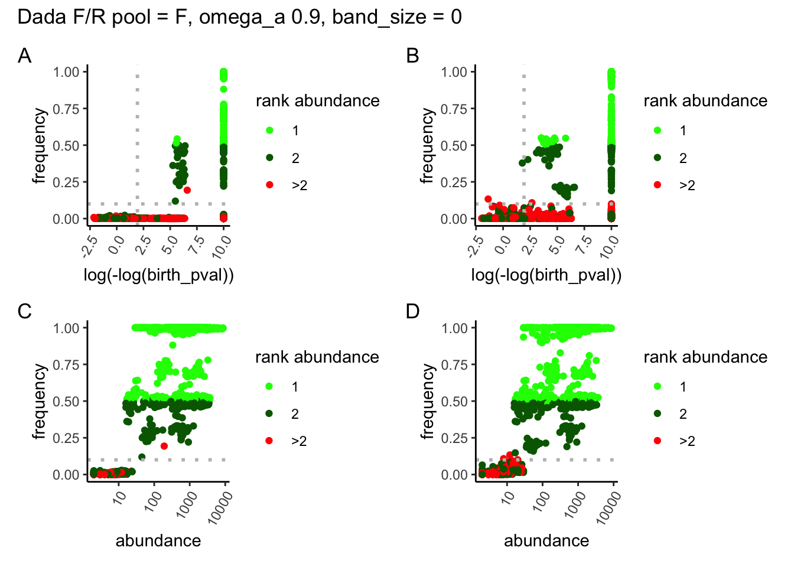

library(tidyGenR)
library(dplyr)
library(patchwork)
library(ggplot2)tidyGenR benchmarking
Attach libraries:
Benchmarking tidyGenR
This repository accompanies the R package tidyGenR available at https://github.com/csmiguel/tidyGenR. It covers (1) all steps for genotype calling with tidyGenR, (2) exploration of the parameters for variant calling, and (3) comparison of tidyGenR against AmpliSAS. It uses real data from a population genetics study of the wild rodent Rattus baluensis (Camacho-Sanchez et al. in preparation).
Preparation of input data
Raw sequences are deposited in NCBI under the BioStudy SRP293699, in the BioProject PRJNA680166. From the BioStudy, we can download the SRA metadata to map sample IDs to SRRs:
# table with mapped SRR-sampleIDs
srr <-
read.csv("data/raw/SraRunTable.csv") |>
select(Run, "Sample.Name") |>
rename(run = Run,
sample = "Sample.Name")
knitr::kable(head(srr, 3))| run | sample |
|---|---|
| SRR13106799 | BOR1063 |
| SRR13106800 | BOR1061 |
| SRR13106802 | BOR626 |
The FASTQ reads from the SRRs can be downloaded with SRA-toolkit:
# download raw reads from NCBI
# they are not downloaded if already present in 'data/raw'.
apply(srr, 1, function(x) {
# name paths
srr_path <- file.path("data/raw", x[1])
srr1 <- file.path("data/raw", paste0(x[1], "_1.fastq"))
srr2 <- file.path("data/raw", paste0(x[1], "_2.fastq"))
sam1 <- file.path("data/raw", paste0(x[2], "_1.fastq"))
sam2 <- file.path("data/raw", paste0(x[2], "_2.fastq"))
# fetch SRR
if (!any(dir.exists(srr_path) || file.exists(sam1))) {
system2("prefetch", paste("-O", "data/raw/", x[1]))
}
# reformat to FASTQ
if (!file.exists(sam1)) {
system2("fasterq-dump", paste("-O", "data/raw/", srr_path))
system2("mv", paste(srr1, sam1))
system2("mv", paste(srr2, sam2))
# rm SRR
system2("rm", paste0("-r ", srr_path, "*"))
}
})NULL# glimpse raw FASTQ
list.files("data/raw", pattern = "fastq")[1:3][1] "BOR1061_1.fastq" "BOR1061_2.fastq" "BOR1063_1.fastq"Check input data files:
freads <- list.files("data/raw", pattern = "1.fastq",
full.names = TRUE)
rreads <- list.files("data/raw", pattern = "2.fastq",
full.names = TRUE)
chr <- check_raw_reads(freads, rreads, low_readcount = 10)All F and (R files) passed check on number of reads above 10.Sample names are unique.All F files have their corresponding R file.Input FASTQ is conditions for tidyGenR. A total of 44 are detected:
chr$samples [1] "BOR1061" "BOR1063" "BOR1069" "BOR1070" "BOR1071" "BOR1074" "BOR1075"
[8] "BOR1076" "BOR1077" "BOR1079" "BOR1080" "BOR1082" "BOR1086" "BOR1088"
[15] "BOR1090" "BOR1091" "BOR1097" "BOR1098" "BOR1101" "BOR1107" "BOR1111"
[22] "BOR1113" "BOR1115" "BOR1125" "BOR1127" "BOR1129" "BOR1131" "BOR1133"
[29] "BOR1135" "BOR1137" "BOR1139" "BOR1141" "BOR1143" "BOR1147" "BOR1149"
[36] "BOR1151" "BOR1155" "BOR614" "BOR615" "BOR616" "BOR618" "BOR619"
[43] "BOR621" "BOR626" Demultiplex by locus
Reads are demultiplexed by locus using primer sequences in paired-end mode.
# load primer data
data("primers")
# path to cutadapt
cutadapt <- system("which cutadapt", intern = TRUE)
# path to folder save locus-demultiplexed FASTQ
demult <- "data/intermediate/demultiplexed"
# print primers
knitr::kable(head(primers, 3))| locus | fw | rv |
|---|---|---|
| nfkbia | GCCTCCAAACACACAGTCAT | TGAGGAGAGCTATGACACGG |
| chrna9 | TTATCTGGGAGAGCGTGACC | TTGGGAAARGATGAACCGGC |
| rogdi | AGAARCCGGCTCACTACCC | GAGGCACAGCTTGTTGAGG |
# demultiplex
demultiplex(
interpreter = "/bin/bash",
cutadapt = cutadapt,
freads = freads,
rreads = rreads,
primers = primers,
sh_out = "code/demultiplex.sh",
write_demultiplexed = demult,
log_out = c_log,
mode = "pe",
run = TRUE)# glimpse demultiplexed FASTQ
list.files(demult, pattern = "fastq")[1:3][1] "BOR1061.abcg8.1.fastq.gz" "BOR1061.abcg8.2.fastq.gz"
[3] "BOR1061.alkbh7.1.fastq.gz"Remove files with few reads:
remove_poor_fastq(demult,
min_reads = 10)Truncate reads
Reads are truncated to a given length for each locus. A data.frame with truncation lengths for forward and reverse reads was built to maximize the amount of information yielded by each locus. For instance, the amplicons for some loci, as nfkbia, are long and it is a good trade-off to leave the low quality ends in but to be sure both F and R reads overlap.
Building of data.frame with locus-specific truncation lengths:
Truncate reads according to locus-specific truncation lengths:
tr_dir <- "data/intermediate/truncated"# truncate
trunc_out <-
trunc_amp(in_dir = demult,
fw_pattern = "1.fastq.gz",
rv_pattern = "2.fastq.gz",
trunc_fr = trunc_fr,
write_trun = tr_dir,
max_ee = c(4, 5),
trunc_q = 2)
# save reads in and out
saveRDS(trunc_out, tr_path)The output from trunc_amp() is a list of matrices with IN and OUT reads after truncation:
0 files removed:# see trunc_out
lapply(trunc_out[seq_len(3)], head, 3)$abcg8
reads.in reads.out
BOR1061 1716 1039
BOR1063 1616 992
BOR1069 1634 961
$alkbh7
reads.in reads.out
BOR1061 546 398
BOR1063 499 361
BOR1069 546 374
$apeh17
reads.in reads.out
BOR1061 3719 2773
BOR1063 3761 2793
BOR1069 3756 2838Exploration of the parameter space
The function explore_dada() can be used to explore the effect of DADA2 parameters (“OMEGA_A”, “BAND_SIZE”, “pool”) on the sensitivity on the variant calling.
- omega_a: threshold for variants to be significant overabundant log(-log(birth_pval)) (see Rosen et al. 2012).
- band_size: positive numbers set a band size in Needleman-Wunsch alignments. In this context, ends free alignment is performed. A value of zero turns off banding, triggering full Needleman-Wunsch alignments, in which gapless alignment is performed (see issue).
- pool: calling variants pooling samples can increase sensitivity (see dicussion).
The returned plots can be used to guide the election of the best OMEGA_A in variant_call(), or frequency (maf) and abundance thresholds (ad) for filtering variants.
Explore variants:
# declare candidate OMEGA_A to use in variant_call()
candidate_omega_a <- 10^-2# paths to forward and reverse truncated reads
ftrun <-
list.files(tr_dir, pattern = "_F_", full.names = T)
rtrun <-
list.files(tr_dir, pattern = "_R_", full.names = T)
# candidate omegavalue to annotate vline in plots.
v_line <- log(-log(candidate_omega_a))
# run explore_dada() with band_size = 0, non pooling and omega_a = 0.9
# forward
F_ind_0 <-
explore_dada(ftrun, band_size = 0, vline = v_line, hline_fr = 0.1)
# reverse
R_ind_0 <-
explore_dada(rtrun, band_size = 0, vline = v_line, hline_fr = 0.1)
# save results
saveRDS(list(F_ind_0 = F_ind_0, R_ind_0 = R_ind_0), x_out_path)Exploration of DADA2 clustering for forward (A, C) and reverse (B, D) reads. The Y-axis represents the frequency of the variant in each locus and sample. The log(-log(birth_pval)) transformation in the X-axis is related to the p-value of a variant being significantly overabundant. Larger x-values represent likely true variants. For representation purposes birth_pval of 0 (thus negative infinite), are converted to 10. Points are color-coded according to the variant rank in read abundance for its given locus and sample. For diploid individuals, green are likely true variants and red are likely false variants. Grey dashed lines are thresholds used for variant_call():
Code
ppool <-
(F_ind_0$p1 | R_ind_0$p1) / (F_ind_0$p2 | R_ind_0$p2) +
patchwork::plot_annotation(title = "Dada F/R pool = F, omega_a 0.9, band_size = 0",
tag_levels = "A")
# save plot with combined loci
ggsave("output/explore_dada.pdf", ppool, width = 8, height = 5)
# print plot
ppool
After the exploration variants in Figure 1, it seems an OMEGA_A = 0.01, implying a cutoff of 1.5271796 in the X-axis and a frequency threshold (Y-axis) of 0.1, excludes most artifacts while maximizing true positives.
The results can also be explored per-locus. For instance, Figure 1 B can be expanded per locus as follows:
lplots$loci_r_ind_0_logp
Variant and genotype calling
Variant calling is run using OMEGA_A = 0.01, and under different parameters:
- band_size: 0, 16
- pool: TRUE, FALSE
Variants are used to genotype individuals with defaults ploidy = 2 and ADt = 10:
genotypes_x <-
lapply(variants_x, genotype)
saveRDS(genotypes_x, file = "output/genotypes_x.rds")Tidy data
A strong point from tidyGenR is that variants and genotypes from variant_call() and genotype() are returned in tidy format: one row per observation and variables in columns. Lets have a look at the data structure.
# glimpse tidy variants
knitr::kable(head(variants_x$ind_bs0))| sample | locus | variant | reads | nt | md5 | sequence |
|---|---|---|---|---|---|---|
| BOR1061 | abcg8 | 01 | 1028 | 390 | c3eab42bea56937040aa79a6bbea2724 | TTGCCCACCCTGTTCATCCATGGAGCAGAAGCCTGCCTGATGTCTCTCATCATTGGCTTCCTTTACTACGGCCACGCAGATAAGCCGCTCTCCTTCGTGGACATGGCAGCCCTCCTGTTCATGATAGGAGCGCTCATTCCTTTTAATGTCATTCTGGATGTCGTCTCCAAATGTGAGTGTCACCCGCCCTCCTCACCAGACATCGGGACAGTGGGACAGCCTCCCTGGGCACTGCACTGAGGCCAAGCTCTGTGCTTCCGCTGGTACCCACGGCATTACAAGAGATGCGACCTCAGTAACACTCTTCGCTCATTCACCTCCCTCTCCCCCATCTCCAGGTCACTCGGAGCGCTCGCTGCTGTACTATGAACTGGAGGACGGACTGTACAC |
| BOR1061 | alkbh7 | 1 | 393 | 390 | 620057f2e547e688d1220db91a3a1d01 | GCCTTCCTGGCCCCATCCCCTCTGGGAGGGAGCGGCAAATCACTGAGATGCGTCGGCCCCGGGGGACCCGGTGAGCCCCAAAAAATGATTCTTCATCTCTAAGGATCTCATGGGAGAAGTCATATCGGGCTGAACCCCTGCAAGAAAATAAAGGCCAAGTAGGTGAAGGGAGGGAAGTCTGTCCCTTCATCATTTCTGTACTTTATCTGGGTAGTGGTGATGGTGACTTCCTCTGCTATGAGAGCAGAAACAAGAGCTGTTGGAAACACTTGGCCTCATCTGGGGGTTCTAGGCTAGGTCATACCTTAGGATATAGAGAGAACCAGGTTCCAGCAACAGTTCCAGCCACTGCTCAGGTTCCTGTGTATGAACCAGCTTCATAACACTTGG |
| BOR1061 | apeh17 | 1 | 2747 | 415 | 394a483d3ae2ce5605f1674b2400986c | AAAGCCAGTGGAGCCACGATAGTTCACTGCAAGTGAGACAAGATAGTCGGGCAATGTTCTCAGTCCCCAACCCAATTCCATGTGTCTGTGACATAGGCCCTAGGACCAGCTGCATCACGTGCTGTCAAGGGGAGGTAGCCAAGAGAGATGAAGCTGCTACCCTGAGACCACAGCATCCTTTCCACAGAAGCTTCAAGTTAATCCACGTGATCACCAGGTTATGAAGCCAGAGGCTAAGCCAGGGCAATTTCTAGTAGTAGTTTCTTTTTGTTTTCAAAACAGGGTTTTTCTGTGCAGTCCTGGATGATCTTGGACTCAAACCTTCACCTGCCTCTGCCTCCTAAGTGCTGGATTAAAGGAGTGTGCCCCCATTGCCCAGCCCGTTTCTAAAGAGTAAGTACACCATAGAAAAGCA |
| BOR1061 | cd27 | 01 | 1143 | 379 | a897a500c934797d4b3662415fc92456 | AGTCTTCCTGGATAGGGATGACGCTGCCCTCCTCCTCCCTGGGGCAGCTGTAAGGACAAAGCTCTTCAGGTACTGCCTGGCTATCTTCATCTGTGCAAAGACAATTAGCCAAGTGTTGGTCAGCAGTGGAGAGAAGAGAGGGGAAGGTGAGGAGAGAGGAGAAGGCCGAGTGGAGGCTGGGGCATGGGGGAGCCAGGGGAGCCTGTGGGAAGGACACTTGAAGAACCAGAGAAGGTGGGTGAAGGTGGGATGGGGGCTTTAGGTGTGGGTGGCAGAGCTGAGAGGGCAGGAGGGAAGGCCTGTGCCTTACTTGGCCCGTGATTTCTTCTTTGACGGAAGAACAAGATCCCACCCAGGACGAAGACAAGAAGCATGCTGG |
| BOR1061 | chrna9 | 01 | 21 | 408 | 3d77c726462281336567895361ceebc1 | TGCAGTGTGACATTCAGCACCGCGTCCGTATCCTCGACTGGACGCAGAGCACTGGAGTAGTCTTCAAAAAGATCGCTGAACAATTTCTGAGCATATTTCCCATTTGCTGTCTCTACGGCTGTTCAAAGAGAAGCACCCGGATGGGCATTTCAAAACAAGACCAACTCTGGGGTCAAAATGGGGGATGGCAACTTTGGATGAGTTCTTTTTTGGGGGCAGGGGACTGGTCTTACCTACCTTGATGATCGAGAGTCAGAAAGAGGTGCGAGCACGCCCATGTACTCACGTCAGTCCTCCTGTCTCTCTCACCAAGGCTCTAAGGAGCCTCTATGGAGCACTGCGCTAGCCCCTCACCTCTGATTCCAGAAGCAGCAAAATACATCCAGCAAAAGGAGATGCAGGACTGGG |
| BOR1061 | chrna9 | 02 | 27 | 408 | 9b805048a29d6233f1ac41f2a6aa1421 | TGCAGTGTGACATTCAGCACCGCGTCCGTATCCTCGACTGGACGCAGAGCACTGGAGTAGTCTTCAAAAAGATCGCTGAATAATTTCTGAGCATATTTCCCATTTGCTGTCTCTACGGCTGTTCAAAGAGAAGCACCCGGATGGGCATTTCAAAACAAGACCAACTCTGGGATCAAAATGGGGGATGGCAACTTTGGATGAGTTCTTTTTTGGGGGCAGGGGACTGGTCTTACCTACCTTGATGATCAAGAGTCAGAAAGAGGTGCGAGCACGCCCATGTACTCACGTCAGTCCTCCTGTCTCTCTCACCAAGGCTCTAAGGAGCCTCTATGGAGCACTGCGCTAGCCCCTCACCTCTGATTCCAGAAGCAGCAAAATACATCCAGCAAAAGGAGATGCAGGACTGGG |
# glimpse tidy genotypes
knitr::kable(head(genotypes_x$ind_bs0))| sample | locus | allele | allele_no | reads | nt | md5 | sequence |
|---|---|---|---|---|---|---|---|
| BOR1061 | abcg8 | 01 | 1 | 514.0 | 390 | c3eab42bea56937040aa79a6bbea2724 | TTGCCCACCCTGTTCATCCATGGAGCAGAAGCCTGCCTGATGTCTCTCATCATTGGCTTCCTTTACTACGGCCACGCAGATAAGCCGCTCTCCTTCGTGGACATGGCAGCCCTCCTGTTCATGATAGGAGCGCTCATTCCTTTTAATGTCATTCTGGATGTCGTCTCCAAATGTGAGTGTCACCCGCCCTCCTCACCAGACATCGGGACAGTGGGACAGCCTCCCTGGGCACTGCACTGAGGCCAAGCTCTGTGCTTCCGCTGGTACCCACGGCATTACAAGAGATGCGACCTCAGTAACACTCTTCGCTCATTCACCTCCCTCTCCCCCATCTCCAGGTCACTCGGAGCGCTCGCTGCTGTACTATGAACTGGAGGACGGACTGTACAC |
| BOR1061 | abcg8 | 01 | 2 | 514.0 | 390 | c3eab42bea56937040aa79a6bbea2724 | TTGCCCACCCTGTTCATCCATGGAGCAGAAGCCTGCCTGATGTCTCTCATCATTGGCTTCCTTTACTACGGCCACGCAGATAAGCCGCTCTCCTTCGTGGACATGGCAGCCCTCCTGTTCATGATAGGAGCGCTCATTCCTTTTAATGTCATTCTGGATGTCGTCTCCAAATGTGAGTGTCACCCGCCCTCCTCACCAGACATCGGGACAGTGGGACAGCCTCCCTGGGCACTGCACTGAGGCCAAGCTCTGTGCTTCCGCTGGTACCCACGGCATTACAAGAGATGCGACCTCAGTAACACTCTTCGCTCATTCACCTCCCTCTCCCCCATCTCCAGGTCACTCGGAGCGCTCGCTGCTGTACTATGAACTGGAGGACGGACTGTACAC |
| BOR1061 | alkbh7 | 1 | 1 | 196.5 | 390 | 620057f2e547e688d1220db91a3a1d01 | GCCTTCCTGGCCCCATCCCCTCTGGGAGGGAGCGGCAAATCACTGAGATGCGTCGGCCCCGGGGGACCCGGTGAGCCCCAAAAAATGATTCTTCATCTCTAAGGATCTCATGGGAGAAGTCATATCGGGCTGAACCCCTGCAAGAAAATAAAGGCCAAGTAGGTGAAGGGAGGGAAGTCTGTCCCTTCATCATTTCTGTACTTTATCTGGGTAGTGGTGATGGTGACTTCCTCTGCTATGAGAGCAGAAACAAGAGCTGTTGGAAACACTTGGCCTCATCTGGGGGTTCTAGGCTAGGTCATACCTTAGGATATAGAGAGAACCAGGTTCCAGCAACAGTTCCAGCCACTGCTCAGGTTCCTGTGTATGAACCAGCTTCATAACACTTGG |
| BOR1061 | alkbh7 | 1 | 2 | 196.5 | 390 | 620057f2e547e688d1220db91a3a1d01 | GCCTTCCTGGCCCCATCCCCTCTGGGAGGGAGCGGCAAATCACTGAGATGCGTCGGCCCCGGGGGACCCGGTGAGCCCCAAAAAATGATTCTTCATCTCTAAGGATCTCATGGGAGAAGTCATATCGGGCTGAACCCCTGCAAGAAAATAAAGGCCAAGTAGGTGAAGGGAGGGAAGTCTGTCCCTTCATCATTTCTGTACTTTATCTGGGTAGTGGTGATGGTGACTTCCTCTGCTATGAGAGCAGAAACAAGAGCTGTTGGAAACACTTGGCCTCATCTGGGGGTTCTAGGCTAGGTCATACCTTAGGATATAGAGAGAACCAGGTTCCAGCAACAGTTCCAGCCACTGCTCAGGTTCCTGTGTATGAACCAGCTTCATAACACTTGG |
| BOR1061 | apeh17 | 1 | 1 | 1373.5 | 415 | 394a483d3ae2ce5605f1674b2400986c | AAAGCCAGTGGAGCCACGATAGTTCACTGCAAGTGAGACAAGATAGTCGGGCAATGTTCTCAGTCCCCAACCCAATTCCATGTGTCTGTGACATAGGCCCTAGGACCAGCTGCATCACGTGCTGTCAAGGGGAGGTAGCCAAGAGAGATGAAGCTGCTACCCTGAGACCACAGCATCCTTTCCACAGAAGCTTCAAGTTAATCCACGTGATCACCAGGTTATGAAGCCAGAGGCTAAGCCAGGGCAATTTCTAGTAGTAGTTTCTTTTTGTTTTCAAAACAGGGTTTTTCTGTGCAGTCCTGGATGATCTTGGACTCAAACCTTCACCTGCCTCTGCCTCCTAAGTGCTGGATTAAAGGAGTGTGCCCCCATTGCCCAGCCCGTTTCTAAAGAGTAAGTACACCATAGAAAAGCA |
| BOR1061 | apeh17 | 1 | 2 | 1373.5 | 415 | 394a483d3ae2ce5605f1674b2400986c | AAAGCCAGTGGAGCCACGATAGTTCACTGCAAGTGAGACAAGATAGTCGGGCAATGTTCTCAGTCCCCAACCCAATTCCATGTGTCTGTGACATAGGCCCTAGGACCAGCTGCATCACGTGCTGTCAAGGGGAGGTAGCCAAGAGAGATGAAGCTGCTACCCTGAGACCACAGCATCCTTTCCACAGAAGCTTCAAGTTAATCCACGTGATCACCAGGTTATGAAGCCAGAGGCTAAGCCAGGGCAATTTCTAGTAGTAGTTTCTTTTTGTTTTCAAAACAGGGTTTTTCTGTGCAGTCCTGGATGATCTTGGACTCAAACCTTCACCTGCCTCTGCCTCCTAAGTGCTGGATTAAAGGAGTGTGCCCCCATTGCCCAGCCCGTTTCTAAAGAGTAAGTACACCATAGAAAAGCA |
tidyGenR vs AmpliSAS
AmpliSAS is a software written in PERL with similar characteristics to tidyGenR. To compare their performance we run AmpliSAS in a docker container to genotype our raw sequences. The steps are detailed here. AmpliSAS returns results in a multisheet EXCEL and in plain text files, one per locus. The function amplisas2tidy() permits to read plain text results from AmpliSAS into tidy variants.
Create input for AmpliSAS:
# amplicon metadata
source("code/amplisas/01_create_amplicon_data.R")
# append barcodes to reads
source("code/amplisas/02_add_barcodes.R")AmpliSAS is run in a DOCKER container. The steps are detailed here.
Integration of alleles with publised data
session info
Details on the sessionInfo() are here:
writeLines(capture.output(sessionInfo()), con = "session_info.txt")